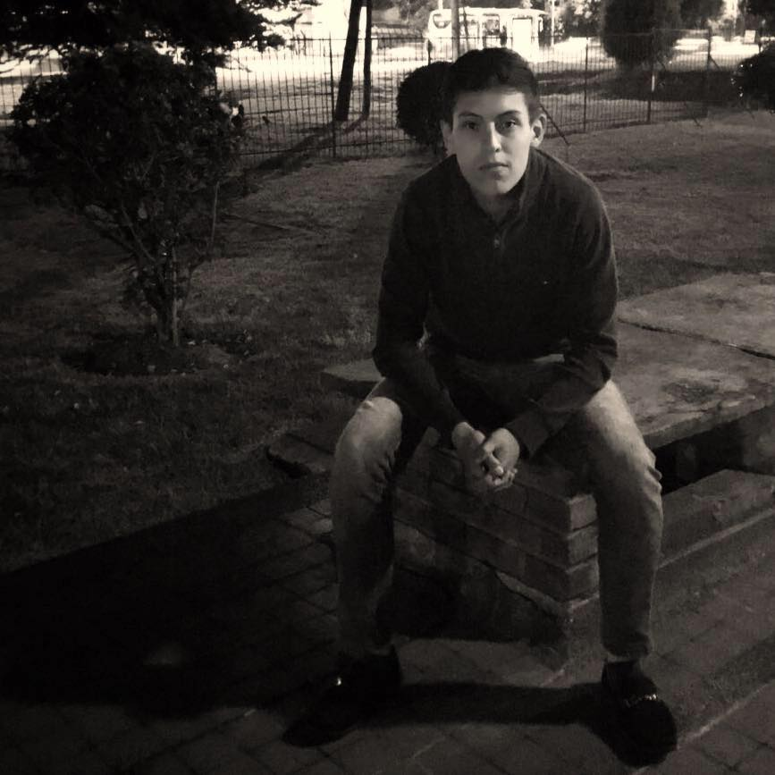

Oscar Yesid Lugo Barrios
Desarrollador Web
Over 6 years of experience building web applications, both as Frontend
Formación
- Ingeniero De Sistemas
- 2017-2023. Pontifica Universidad Javeriana
- Ingles
- B2 Intermedio Avanzado
- Frances
- A2 Elemental Avanzado

Experiencia Laboral
- Asistente de investigación en Especialización en auditoria de sistemas
- Enero 2022-Julio 2022. Universidad Santo Tomas
Premios
- Participante HACKATHON 2022 Universidad Javeriana
- 2022
- 8° puesto Olimpiada Matematicas 2016 Bogota
- 2016
Otros
- 10 cursos virtuales
- Creador de una app academica